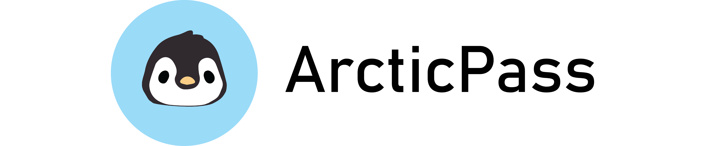

Introduction
In the second Summer session of 2020 for my UCSD design program, I took a 5-week course in which a group of students was to go through the entire user-centered design process for a web or mobile app. Due to the pandemic, the course was online, and our team was located across several different time zones and countries, making group communication and writing assignments a bit more challenging. The theme given to our group of 8 students was an app designed for children or parents. You can see our design process from ideation to interactive prototyping with Figma below in our Medium team blog.
My Role: User Research, Low & High-Fidelity Prototyping, User Testing
Team Medium Blog
See our team's individual blog posts through the duration of the 5-week design process below or at this link:
Final Interactive Prototype
Below you can play with the final prototype we developed following our user testing. Note that you can open full screen in the top right corner on larger screens, or tap the bottom white bar on mobile screens.